Viaje del Rey de la Pradera
El Viaje del Rey de la Pradera es un juego de la máquina de arcade del Salón Fruta Estelar. Ganar el juego hará que obtengas una máquina de arcade para tu casa. Abigail tiene ese juego en versión consola y podrás jugar con ella teniendo suficiente nivel de amistad. Los elementos aleatorios de este juego NO se ven influidos por la suerte.[1].
Hay que tener en cuenta que los potenciadores y los enemigos no tienen nombre dentro del juego y que han sido nombrados por los miembros de la comunidad.
Mecánicas del juego
El juego consiste en un shooter, más concretamente "twin-stick" shooter. WASD mueven al jugador y ↑←↓→ disparan. Los tiros pueden ser diagonales combinando dos teclas.
Las oleadas de enemigos aparecen desde los bordes de la pantalla y se moverán hacia ti mientras la barra de tiempo de la parte superior disminuye. Tu personaje no tiene barra de vida y morirá si le alcanza un proyectil o le toca un enemigo. Empiezas con 3 vidas, las cuales puedes aumentar mientras juegas. Si pierdes tu última vida (Se verá marcada tu vida como un x-1), aparecerá el Game Over y perderás. Una vez que la barra de tiempo termine de disminuir y desaparezca, los enemigos ya no apareceran, y una vez que acabes con los que quedan, podrás moverte a la siguiente zona (marcada con una flecha de dirección). A veces los enemigos soltarán potenciadores o power-ups y monedas cuando los matas. Los potenciadores apareceran en la parte superior izquierda de la pantalla, a menos que ya tengas uno, lo cual hará que consumas el que recojas al momento. Para usar potenciadores guardados pulsa la barra espaciadora. Los ptenciadores pueden ayudarte mucho en situaciones peligrosas. El efecto de los potenciadores desaparecerá tras un tiempo de usarlos.
Cada pocos niveles, una vez hayas despejado la zona, aparecerá un mercader que te ofrecerá tres mejoras para comprar. Sólo puedes comprar una mejora cada vez. Cada fase termina con una batalla contra un jefe, el cual tiene más vida y munición que tú.
Potenciadores
| Imagen | Nombre | Descripción |
|---|---|---|
| Café | Incrementa tu velocidad de movimiento. | |
| Vida extra | Añade una vida al contador de vidas. | |
| 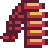 | Munición pesada | Aumenta significativamente la frecuencia de disparo. |
| Bomba atómica | Mata instantáneamente a todos los enemigos en pantalla. Los enemigos muertos no sueltan pontenciadores. | |
| 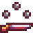 | Escopeta | Disparas tres balas dispersas en la dirección de disparo. Disminuye ligeramente la frecuencia de disparo. |
| Bomba de humo | Teletransporta a tu personaje a un lugar aleatorio de la pantalla y el personaje tendrá sigilo. Con el sigilo, los enemigos no se moverán y tendrán interrogaciones en sus cabezas. Los enemigos nuevos que aparezcan no tendrán este efecto. | |
| 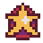 | Placa de Sheriff | Incrementa la frecuencia de disparo, la velocidad de movimiento y dispara de forma dispersa. Combina los potenciadores de munición pesada, café y escopeta en un sólo y cómodo potenciador. Sin embargo, los bonus de frecuencia de disparo y velocidad de movimiento son algo menores que los de munición pesada y café. Con las botas y el arma mejorados al máximo, el bonus se reduce al mínimo. |
| Tumba | Un rayo cae sobre tu personaje, el cual se convierte en zombi durante un tiempo. Ganas velocidad de movimiento y muerte por contacto, los enemigos huyen de ti y suena una música diferente. Volverás a tu estado normal cuando la música pare. No puedes disparar en este estado. | |
| 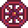 | Rueda | Disparas en las 8 direcciones a la vez. |
Mejoras
Las mejoras se compran con las monedas que dejan los enemigos, como 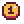 y 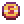, la moneda es muy rara. Las mejoras se pueden comprar al mercader cada dos niveles: 1-2, 1-4, 2-1, 2-3, 3-1 y 3-3.
| Hueco del mercader | Imagen | Nombre | Precio de compra | Descripción |
|---|---|---|---|---|
| 1 | 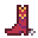 | Botas | 8 | Mejora la velocidad de movimiento. |
| 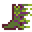 | 20 | |||
| Vida extra | 10 | Consigue una vida extra. Se puede comprar la próxima vez al mercader. | ||
| 2 | Arma | 10 | Incrementa la velocidad de disparo. | |
| 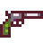 | 20 | |||
| 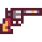 | 30 | |||
| Superarma | 99 | Consigue el disparo de la escopeta de forma permanente sin el descenso de la velocidad de disparo. Se mostrará como un cuarto icono a la izquierda, encima de los otros 3. | ||
| Placa de Sheriff | 10 | Consigue una Placa de Sheriff. Se puede comprar la próxima vez al mercader. | ||
| 3 | Munición | 15 | Incrementa el daño de las balas a 2 / 3 / 4. Las balas ganan penetración, de tal forma que si una bala mata a un enemigo, esta sigue desplazándose con el daño restante, permitiendo incluso matar a dos enemigos con una bala. | |
| 30 | ||||
| 45 | ||||
| Placa de Sheriff | 10 | Consigue una Placa de Sheriff. Se puede comprar la próxima vez al mercader. |
Enemigos
| Imagen | Nombre | Vida | Descripción | Aparece en |
|---|---|---|---|---|
| 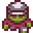 | Orco | 1 | El enemigo más débil. Anda lentamente hacia el jugador, aparecen en grandes números. | Fase 1 (zonas 1-4) |
| Acorazado | 2 (6 cuando se despliega) | Entra en la zona, camina hasta un lugar entre el centro y el perímetro y se despliega en una bola acorazada. Pueden dañar al jugador estén desplegados o no. El estar desplegados puede beneficiar al juagador, ya que bloquea el movimiento de los orcos. En cuanto acabes con los demás enemigos, puedes ocuparte de los acorazados tranquilamente. | Fase 1 (zonas 2-4) | |
| Ogro | 3 | Se mueve lentamente, pero aguanta mucho daño. Destruye a los acorazados por contacto. | Fase 1 (zonas 3-4), Fase 2 (zonas 1-3) | |
| 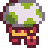 | Seta | 2 | Se mueve rápidamente, corriendo hasta más rápido que el jugador si no tiene mejoras de movimiento. | Fase 2 (zonas 1-3) |
| 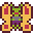 | Duendecillo | 1 | El primer enemigo aéreo. Aparece en cualquier lugar del perímetro y vuela hacia el jugador. | Fase 2 (zonas 1-3) |
| Momia | 6 | Se mueve lentamente y absorbe mucho daño. Aparecen en grandes hordas. | Fase 3 (zonas 1-3) | |
| 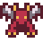 | Demonio | 3 | Un enemigo volador que aparece en cualquier lugar del perímetro, buscando al jugador. | Fase 3 (zonas 1-3) |
Amigos
| Imagen | Nombre | Vida | Descripción | Aparece en |
|---|---|---|---|---|
| 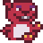 | Tuza | ∞ | Distrae a los enemigos, atrayéndoles hacia él y matándolos por impacto. No puede morir a manos del jugador. Desaparece tras un tiempo. | Aleatorio |
Jefes
| Imagen | Nombre | Vida | Descripción | Aparece en |
|---|---|---|---|---|
| Cowboy | Ambas peleas con el cowboy suceden en zonas abiertas con una pequeña zona de cobertura. El jugador y el cowboy están separados por un barranco/río, el cual sólo se puede cruzar si usas una bomba de humo y tienes suerte. Aunque el cowboy necesite muchas balas para morir, el jugador sólo necesitará una para morir, por lo cual la evasión es un punto importante. El cowboy sale de su cobertura, dispara una ráfaga de balas y después vuelve a cubrirse. Muchas veces se queda quieta tras la cobertura, pero algunas veces está al descubierto, lo cual puede ser un buen momento para encajarle unas cuantas balas. Al morir, el enemigo dejará una vida extra, aparecerá un puente para cruzar al otro lado y aparecerá un carro que te permite viajar a la siguiente fase. | Fase 1 (zona 5), Fase 2 (zona 4) | ||
| 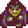 | Fector | Al contrario que la pelea contra el cowboy, el jugador podrá moverse por toda la zona. Sin embargo, Fector también podrá moverse libremente, lo que hace esta pelea más difícil, permitiéndole disparar directamente al jugador. A veces, se moverá a la zona central y disparará en las 8 direcciones. Cuando le quede poca vida, invocará enemigos para matarte. Al derrotar al Fector, se acabará el juego. | Fase 3 (zona 4) |
Niveles
| Imágenes de cada zona | ||||||||||||||||||||||||
|---|---|---|---|---|---|---|---|---|---|---|---|---|---|---|---|---|---|---|---|---|---|---|---|---|
|


Modo difícil
Tras completar el Viaje del Rey de la Pradera, el jugador tiene opción de escoger el modo difícil, manteniendo las mejoras y las monedas. Este modo se introdujo en la versión 1.1.
Curiosidades
- Cuando el jugador encuentre suficientes libros perdidos, en el museo aparecerá uno que habla del Viaje del Rey de la Pradera. Dice:
"¡El célebre videojuego! ¿Lo sabías? ¡Quien se pase el "Viaje del Rey de la Pradera" entrará automáticamente en el sorteo de un premio especial! ¿lo sabías? El desarrollador afirmó que el protagonista se basa en un personaje real... ¡Un verdadero héroe vaquero de una isla pradera del mar de Gema!"
- Hay un error que impide continuar la partida en ciertas circunstancias: Si se usa la Bomba atómica durante la primera pelea contra el jefe, este desaparecerá pero la fase no terminará. También ocurre con la Tumba con el último jefe. La única forma de solucionarlo es pulsado ESC para volver al Salón.
- Tener a la vez la Rueda y la Escopeta hará que tus disparos vayan en casi cualquier lugar del mapa, pudiendo matar a todo lo que haya en pantalla.
- El Nivel de zoom dentro del juego afecta a cómo se verá el juego del Viaje del Rey de la Pradera.